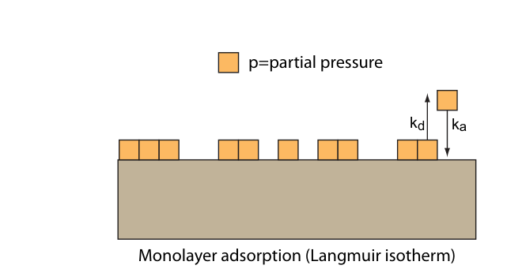
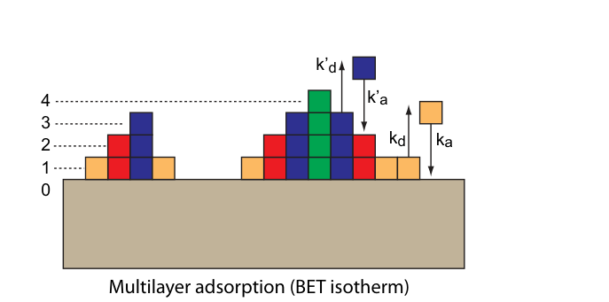
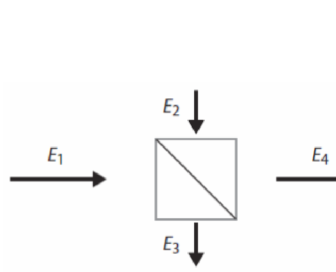
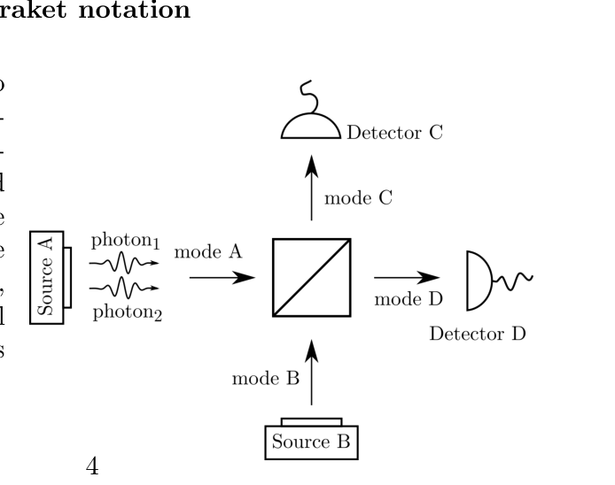
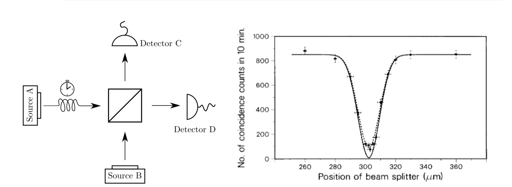
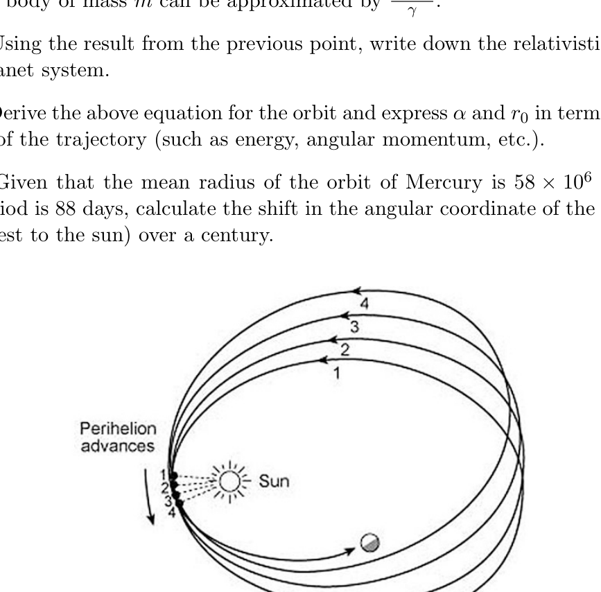
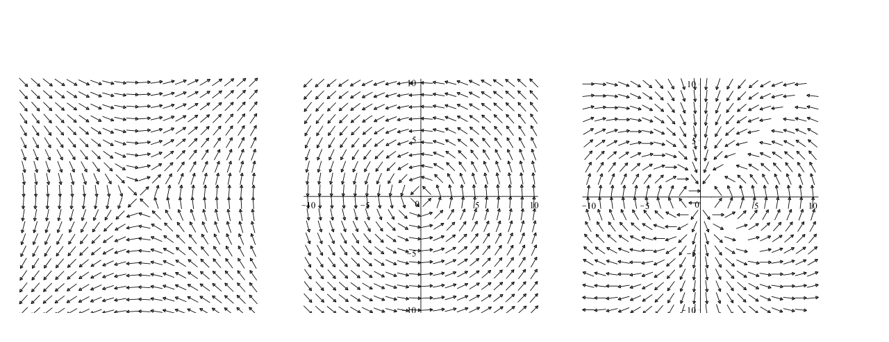
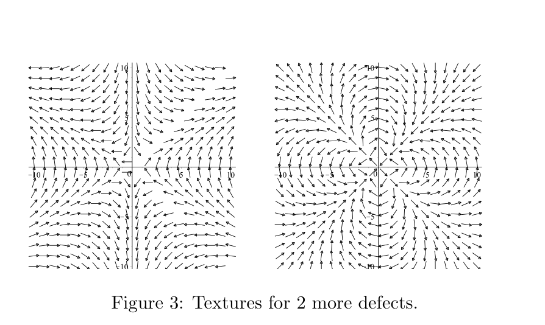
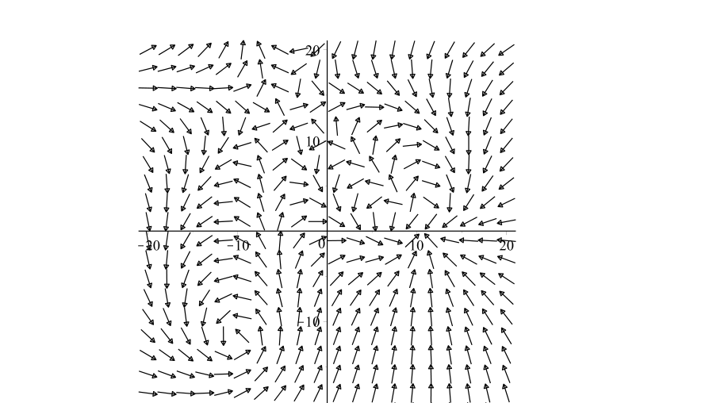
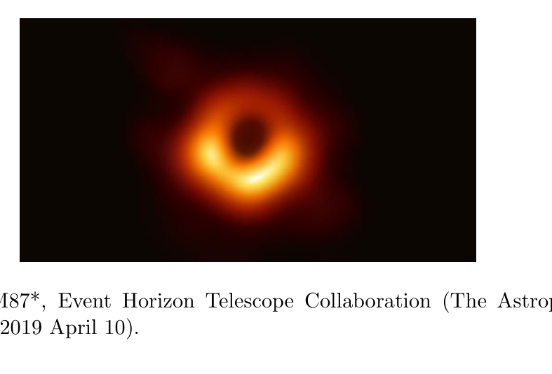

Mono- and Multilayer adsorption
Adsorption of molecules from the gas phase and onto a solid surface represents an important class of problems in surface physics. To model the process, some assumptions are usually made:
- The surface has a finite number of identical adsorption sites into which molecules can adsorb.
- The adsorbed molecules do not interact.
- Binding is reversible.
First we consider adsorption to form a monolayer on the surface. That is, the formation of multilayers is not allowed. Here is the number of empty surface sites and is the number of occupied sites. The partial pressure of the adsorbate in the gas phase is . The rate constant for adsorption is and the rate constant for desorption is . The equilibrium constant is .

Monolayer adsorption (Langmuir isotherm).
Multilayer adsorption (BET isotherm).The rate of adsorption is: The rate of desorption is:
(a, 2 points) Assume that adsorption has reached equilibrium. Derive an expression for the monolayer surface coverage in terms of and . Note that is defined as the fraction of surface sites occupied by adsorbates:
where is the number of surface sites having adsorbates and is the total number of surface sites.
(b, 2 points) What is in the limiting situations of high and low pressures ? What is the characteristic pressure where half of the surface sites are occupied?
Next we consider the situation where adsorbing molecules can form multilayers on the surface.1 We define as the number of surface sites having exactly adsorbates. The same assumptions (1-3) as above are used. In addition we assume that: the rate constants ( and ) for adsorption and desorption into the top layer of the surface; (1) determine the equilibrium constant for these top layers and they describe the adsorbate-adsorbate interactions. We therefore define two new rate constants and to describe the adsorbate-adsorbate interactions. The equilibrium constant for adsorbate-adsorbate interactions is .
(c, 2 points) Using a recursive argument show that can be written in terms of . Show specifically that for :
where we have defined .
(d, 2 points) Next we are interested in finding the surface coverage for multilayer adsorption, where , with the multilayer definition of . For multilayer adsorption the total number of adsorbed molecules is given as:
The total number of surface sites is the sum of sites having all possible numbers of layers (including empty sites):
Find expressions for and for multilayer adsorption. Determine the coverage for multilayer adsorption.
(e, 2 points) Give a physical interpretation of the quantities and .
Fonte: Testo (PDF) — p.2 Topic: Thermodynamics, Chemistry Metodi: Statistical Averaging, Approximation & Series Expansion, Conservation Laws, Physical Modeling Competenze: Mathematical Modeling, Physical Reasoning Objects: Gas
Adsorzione mono e multilivello
L’assorbimento di molecole dalla fase gasosa e su una superficie solida rappresenta una classe importante di problemi nella fisica superficiale. Per modellare il processo, si fanno di solito alcune ipotesi:
- La superficie ha un numero finito di identici siti di adsorzione in cui le molecole possono adsorbirsi.
- Le molecole adsorbate non interagiscono.
- Il legame è reversibile.
Prima consideriamo l’adsorzione per formare un mono strato sulla superficie. Cioè, la formazione di strati multi-layer non è consentita. Qui è il numero di siti superficiali vuoti e è il numero di siti occupati. La pressione parziale dell’adsorbato nella fase a gas è . La costante di velocità per l’adsorzione è e la costante di velocità per la desorzione è . La costante di equilibrio è .
Adsorzione monolivello (isoterma di Langmuir).
*Adsorzione multicolore (isoterma BET). *
Il tasso di adsorzione è: Il tasso di desorzione è:
**(a, 2 punti) ** Supponiamo che l’adsorzione abbia raggiunto l’equilibrio. Derivare un’espressione per la copertura superficiale monolivello in termini di e . Si noti che è definito come la frazione di siti superficiali occupati dagli adsorbati:
dove è il numero di siti superficiali che contengono adsorbati e è il numero totale di siti superficiali.
**(b, 2 punti) ** Che cos’è nelle situazioni limitanti di pressione alta e bassa ? Qual è la pressione caratteristica quando la metà delle zone superficiali sono occupate?
Next we consider the situation where adsorbing molecules can form multilayers on the surface.1 We define as the number of surface sites having exactly adsorbates. Si utilizzano le stesse ipotesi (1-3) di cui sopra. Inoltre, supponiamo che: le costanti di velocità ( e ) per l’adsorzione e la desorzione nel livello superiore della superficie; (1) determinano la costante di equilibrio per questi livelli superiori e descrivono le interazioni adsorbato-adsorbato. Per descrivere le interazioni adsorbato-adsorbato, definiamo quindi due nuove costanti di velocità e . La costante di equilibrio per le interazioni adsorbato-adsorbato è .
**(c, 2 punti) ** Utilizzando un argomento ricorrente si mostra che può essere scritto in termini di . Indicare specificamente che per :
dove abbiamo definito .
**(d, 2 punti) ** Successivamente ci interessa trovare la copertura superficiale per l’adsorzione a più strati, dove , con la definizione a più strati di . Per l’adsorzione a più strati, il numero totale di molecole adsorbite è indicato come:
Il numero totale di siti superficiali è la somma di siti che hanno tutti i possibili numeri di strati (compresi i siti vuoti):
Trova le espressioni per e per l’adsorzione a più strati. Determinare la copertura per l’adsorzione a più strati.
**(e, 2 punti) ** Date un’interpretazione fisica delle quantità e .
Fonte: Testo (PDF) — p.2 Topic: Thermodynamics, Chemistry Metodi: Statistical Averaging, Approximation & Series Expansion, Conservation Laws, Physical Modeling Competenze: Mathematical Modeling, Physical Reasoning Objects: Gas
Quantum Optics
The quantum behavior of light can be observed in extremely simple optics experiments, with probably the simplest being a single beamsplitter. An important consequence of the quantization of light is that single quanta of light - photons - can not simply be split in half in a linear beamsplitter. Quantum mechanics instead describes the probabilities of each individual photon emerging from one of the beamsplitter outputs. This is and already leads to observable results revealing the quantum statistics of photons and allows us to understand the classical Mach-Zehnder interferometer in terms of single photons.
Exercise 1: The classical beamsplitter
A beamsplitter is simply a partially reflective mirror, where each of the two input ports is broken into a transmitted and a reflected part, as shown in the figure. We consider a lossless beamsplitter with classical inputs and . The outputs are then given by
E_2 = RE_1 + TE_3,\qquad E_4 = TE_1 + RE_3,\tag{1}
where are the (complex) amplitudes of the input and output light fields, is the reflection coefficient, and the transmission coefficient.

Energy conservation requires that . Note, that here we consider the intensities, while the reflection and transmission coefficients are defined relative to the field amplitudes.
a) (1 point) Show that energy conservation for the case of only one input light field (i.e. ) leads to .
b) (1 point) Show that the case of equal field strengths on both inputs (i.e. ) leads to the condition .
c) (1 point) Show that the above condition leads to an additional phase shift of between the fields of the transmitted and reflected components.
Exercise 2: The QM beamsplitter in braket notation
We now consider the case where the input into the beamsplitter are single photons. Two photon sources, A and B, emit photons into the respective input modes of the beamsplitter, and two detectors, C and D detect photons in the respective output modes. Since the photons are non-interacting and independent of each other, we need to assign each photon an individual state vector where their state expresses the mode X it is located in. The overall state for incoming photons in mode A would thus be
|\psi^{(n)}\rangle = |a\rangle_1 |a\rangle_2 \cdots |a\rangle_n,\tag{1}
while a state with photon 1 in mode A and photon 2 in mode B would be
|\psi^{(2)}\rangle = |a\rangle_1 |b\rangle_2,\tag{2}
which is not identical to photon 1 in mode B and photon 2 in mode A
|\psi^{(2)}\rangle = |b\rangle_1 |a\rangle_2.\tag{3}
The beam splitter either transmits or reflects each single photon, with the reflection and transmission coefficients now determining the probability of each outcome. For the case of a loss-free 50/50 beam splitter the output for single photons emitted in mode A and B, described by and respectively, is
|a\rangle \xrightarrow{BS} \frac{1}{\sqrt{2}} (|c\rangle + i|d\rangle),\tag{4}
|b\rangle \xrightarrow{BS} \frac{1}{\sqrt{2}} (i|c\rangle + |d\rangle).\tag{5}
The factors of originate from the phase shift induced on reflected photons which you proved in the last exercise.

a) (2 points) For the following input states, calculate the output state and the probabilities of specific detection events:
- (a) A single photon in mode A: . What is the probability of detecting the photon on counter C? And on counter D?
- (b) Two photons in mode A: . What is the probability of detecting both photons on counter C? On counter D? What is the probability of detecting one photon on each counter?
b) (2 points) Consider the following input states with one photon in each input mode:
- (a) two distinguishable photons ;
- (b) two indistinguishable bosonic photons ;
- (c) a superposition of two ‘fermionic’ photons .
Calculate the output state for each input state and determine the probabilities of detecting both photons on detector C, both on detector D, and one photon on each detector.
Exercise 3: Hong-Ou-Mandel experiment
The experiment you discussed in the previous exercise was first performed by Hong, Ou and Mandel in 1987. As shown in the figure, they let two photons, one in each input mode, on the beamsplitter.

Figure 1: Left: Schematic of the Hong-Ou-Mandel experiment. Right: Plot of the first observation of the Hong-Ou-Mandel dip (C. K. Hong, Z. Y. Ou, and L. Mandel, Phys. Rev. Lett. 59, 2044, 1987).The experiment had an additional parameter, namely the distance between source A and the beamsplitter. This allowed to change the relative arrival time of the two photons on the beamsplitter. In their data original plot, shown in the figure, this corresponds to what is shown on the x-axis. A beamsplitter position of slightly more than 300 meant that the photons arrived exactly at the same time, while a change of this position would shift the arrival time. A relative earlier or later than the one from source B. With this setup, they could measure the probability to detect a coincidence between the photons as a function of the delay length (equivalent to delay time). Coincidence means that one photon each is detected on each detector simultaneously.
As you can see in the figure the number of this photon coincidence experiment shows a strong dip when the photons arrive within a certain time window. This is now known as the Hong-Ou-Mandel dip.
a) (1 point) Consider the experimental result shown in the figure. What does the observed dip in the coincidences tell about the quantum statistics of photons when you compare it to your results from exercises 1 b) and 2 b)?
b) (1 point) The Hong-Ou-Mandel experiment is nowadays used as an important tool in quantum optics, e.g. to determine the quality of single-photon emitters. In such experiments, only a single source is used, with the first photon sent to input A being delayed, e.g. in a long optical fiber, so that it coincides with the second photon (from the same source) sent to input B. Again, this relative delay is varied as in the original experiment, and a dip is measured as function of the delay time. What do you think decides the width (in time - or distance as in the plot above) of this dip?
c) (1 point) How does the Hong-Ou-Mandel dip fit together with the statement that photons are non-interacting particles?
Fonte: Testo (PDF) — p.4 Topic: Modern-Quantum Physics, Wave Optics Metodi: Superposition Principle, Interference & Diffraction Analysis, Conservation of Energy, Photon Energy Relation Competenze: Physical Reasoning, Mathematical Modeling Objects: Photon, Mirror
Quantum Optics
Il comportamento quantistico della luce può essere osservato in esperimenti di ottica estremamente semplici, con probabilmente il più semplice essere un singolo fascio splitter. Una conseguenza importante della quantizzazione della luce è che singoli quanti di luce - i fotoni - non possono semplicemente essere divisi a metà in un fascio lineare. La meccanica quantistica invece descrive le probabilità di ogni singolo fotone che emerge da una delle uscite del fascio. Questo è e già porta a risultati osservabili che rivelano le statistiche quantistiche dei fotoni e ci permette di comprendere l’interferometro classico di Mach-Zehnder in termini di fotoni singoli.
Esercizio 1: Il classico splitter di fasce
Un fascio di scissione è semplicemente uno specchio parzialmente riflettente, in cui ciascuna delle due porte di ingresso è suddivisa in una parte trasmessa e una parte riflessa, come mostrato nella figura. Consideramo un splitter di fascio senza perdite con input classici e . Le uscite sono quindi date da
E_2 = RE_1 + TE_3,\qquad E_4 = TE_1 + RE_3,\tag{1}
se sono le amplitudini (complese) dei campi di luce di ingresso e di uscita, è il coefficiente di riflessione e il coefficiente di trasmissione.
La conservazione dell’energia richiede che . Si noti che qui consideriamo le intensità, mentre i coefficienti di riflessione e trasmissione sono definiti rispetto alle amplitudini del campo.
a) *(1 punto) * Mostra che il risparmio energetico per un solo campo luminoso di ingresso (cioè ) porta a .
b) *(1 punto) * Mostra che il caso di uguali resistenze di campo su entrambi gli input (cioè ) porta alla condizione .
c) *(1 punto) * Mostra che la condizione di cui sopra conduce a un ulteriore spostamento di fase di tra i campi dei componenti trasmessi e riflessi.
Esercizio 2: Il fascio QM in notazione di frenatura
Ora consideriamo il caso in cui l’input nel fascio di scissione sono singoli fotoni. Due fonti di fotoni, A e B, emettono fotoni nelle rispettive modalità di ingresso del fascio di scissione e due rilevatori, C e D, rilevano i fotoni nelle rispettive modalità di uscita. Poiché i fotoni non interagiscono e sono indipendenti l’uno dall’altro, dobbiamo assegnare a ciascun fotone un singolo vettore di stato dove il loro stato esprime la modalità X in cui si trova. The overall state for incoming photons in mode A would thus be
|\psi^{(n)}\rangle = |a\rangle_1 |a\rangle_2 \cdots |a\rangle_n,\tag{1}
mentre uno stato con fotone 1 in modalità A e fotone 2 in modalità B sarebbe
|\psi^{(2)}\rangle = |a\rangle_1 |b\rangle_2,\tag{2}
che non è identico al fotone 1 nella modalità B e al fotone 2 nella modalità A
|\psi^{(2)}\rangle = |b\rangle_1 |a\rangle_2.\tag{3}
Il scartatore del fascio trasmette o riflette ogni singolo fotone, con i coefficienti di riflessione e trasmissione che determinano ora la probabilità di ogni risultato. Per un splitter a fascio 50/50 senza perdite, la uscita per i fotoni singoli emessi in modalità A e B, descritta rispettivamente da e , è
|a\rangle \xrightarrow{BS} \frac{1}{\sqrt{2}} (|c\rangle + i|d\rangle),\tag{4}
|b\rangle \xrightarrow{BS} \frac{1}{\sqrt{2}} (i|c\rangle + |d\rangle).\tag{5}
I fattori di provengono dal cambiamento di fase indotto sui fotoni riflessi che avete dimostrato nell’ultimo esercizio.
a) *(2 punti) * Per gli stati di input seguenti calcolare lo stato di uscita e le probabilità di eventi specifici di rilevamento:
- a) Un singolo fotone in modalità A: . Qual è la probabilità di rilevare il fotone sul contatore C? E sul bancone D?
- (b) Due fotoni in modalità A: . Qual è la probabilità di rilevare entrambi i fotoni sul contatore C? Sul bancone D? Qual è la probabilità di rilevare un fotone su ogni contatore?
b) *(2 punti) * Considerare i seguenti stati di ingresso con un fotone in ogni modalità di ingresso:
- a) due fotoni distinguibili ;
- b) due fotoni bosonici indistinguibili ;
- c) una sovrapposizione di due fotoni “fermionici” .
Calcolare lo stato di uscita per ogni stato di input e determinare le probabilità di rilevare entrambi i fotoni sul rilevatore C, sia sul rilevatore D, che un fotone su ciascun rilevatore.
Esercizio 3: esperimento Hong-Ou-Mandel
L’esperimento che avete discusso nell’esercizio precedente è stato eseguito per la prima volta da Hong, Ou e Mandel nel 1987. Come mostrato nella figura, lasciano due fotoni, uno in ogni modalità di ingresso, sul fascio.
Figure 1: Left: Schematic of the Hong-Ou-Mandel experiment. Destra: Piatto della prima osservazione del dip di Hong-Ou-Mandel (C. K. Hong, Z. Y. Ou, e L. Mandel, fisico. Il reverendo. Lett. 59, 2044, 1987).
L’esperimento aveva un parametro aggiuntivo, vale a dire la distanza tra la fonte A e il fascio. Ciò permise di cambiare il tempo relativo di arrivo dei due fotoni sul fascio. Nel grafico originale dei dati, mostrato nella figura, questo corrisponde a quello che è mostrato sull’asse x. Una posizione del fascio di scissione di poco più di 300 significava che i fotoni arrivarono esattamente nello stesso momento, mentre un cambiamento di questa posizione avrebbe spostato l’orario di arrivo. Un parente prima o dopo di quello della fonte B. Con questa configurazione, potrebbero misurare la probabilità di rilevare una coincidenza tra i fotoni in funzione della lunghezza del ritardo (equivalente al tempo di ritardo). La coincidenza significa che un fotone è rilevato su ogni rilevatore contemporaneamente.
Come si può vedere nella figura il numero di questo esperimento di coincidenza fotonica mostra un forte calo quando i fotoni arrivano entro una certa finestra temporale. Questo è ora conosciuto come Hong-Ou-Mandel dip.
a) *(1 punto) * Considerate il risultato sperimentale riportato nella figura. Cosa ci dice la diminuzione osservata delle coincidenze sulle statistiche quantistiche dei fotoni quando si confrontano con i risultati degli esercizi 1 b) e 2 b)?
b) *(1 punto) * L’esperimento Hong-Ou-Mandel è oggi utilizzato come importante strumento nell’ottica quantistica, ad esempio per determinare la qualità degli emettitori monofotonici. In tali esperimenti, viene utilizzata solo una singola fonte, con il primo fotone inviato all’input A che viene ritardato, ad esempio. in una lunga fibra ottica, in modo che coincida con il secondo fotone (dalla stessa fonte) inviato all’input B. Ancora una volta, questo ritardo relativo è variabile come nell’esperimento originale, e un calo è misurato in funzione del tempo di ritardo. Cosa pensi che decida la larghezza (in tempo - o distanza come nel diagramma sopra) di questo dip?
c) *(1 punto) * Come si adatta la dip di Hong-Ou-Mandel alla dichiarazione che i fotoni sono particelle non interagiscono?
Fonte: Testo (PDF) — p.4 Topic: Modern-Quantum Physics, Wave Optics Metodi: Superposition Principle, Interference & Diffraction Analysis, Conservation of Energy, Photon Energy Relation Competenze: Physical Reasoning, Mathematical Modeling Objects: Photon, Mirror
Radical pair spin chemistry
Consider a “radical pair” which consist of two unpaired electronic spins, where one of the electrons is coupled to a spin-1/2 nucleus through one hyperfine interaction tensor . The radical pair is subject to an external magnetic field . The overall spin state of the two unpaired electronic spins can be either singlet () or triplet (). The Hamiltonian for the system is given by
\hat{H} = \mu_B g(\vec{B} \cdot \vec{S}_1) + \mu_B g(\vec{B} \cdot \vec{S}_2) + \mu_B (\vec{S}_1 \cdot A \cdot \vec{I})\tag{1}
when the possible dipole-dipole and exchange interactions in the spin-system are neglected. , is the spin operator of the nucleus, are the electron spin operators and is the hyperfine interaction tensor.
(Q1) (1 point) What are the possible values of the total spin?
(Q2) (2 points) Define all possible basis eigenfunctions , that are eigenfunctions of the total spin, to describe the quantum states of the radical pair.
(Q3) (2 points) State the conditions at which a transition between a singlet and triplet state of the radical pair is possible.
(Q4) (1 point) Check numerically if this condition is satisfied for the anisotropic hyperfine tensor, where the is the only non-zero component. The external magnetic field strength is to be 0.5 G.
(Q5) (3 points) Now consider the radical pair “prepared” initially in the singlet state, estimate the characteristic time needed for it to be converted into one of the triplet states.
Fonte: Testo (PDF) — p.7 Topic: Modern-Quantum Physics, Magnetism Metodi: Symmetry Argument, Superposition Principle, Physical Modeling, Approximation & Series Expansion Competenze: Physical Reasoning, Mathematical Modeling Objects: Electron, Nucleus
Cimica radicale della rotazione di coppie
Considera una “coppia radicale” che consiste in due spin elettronici non accoppiati, dove uno degli elettroni è accoppiato a un nucleo spin-1/2 attraverso un tensore di interazione iperfino . La coppia radicale è soggetta a un campo magnetico esterno . Lo stato di spin complessivo dei due giri elettronici non abbinati può essere singolo () o triplet (). Il Hamiltonian per il sistema è dato da
\hat{H} = \mu_B g(\vec{B} \cdot \vec{S}_1) + \mu_B g(\vec{B} \cdot \vec{S}_2) + \mu_B (\vec{S}_1 \cdot A \cdot \vec{I})\tag{1}
quando le possibili interazioni di dipolo-dipolo e di scambio nel sistema di spin sono trascurate. , è l’operatore di spin del nucleo, sono gli operatori di spin degli elettroni e è il tensore di interazione iperfino.
**(Q1) ** *(1 punto) * Quali sono i valori possibili del giro totale?
**(Q2) ** *(2 punti) * Definire tutte le possibili funzioni proprie di base , che sono funzioni proprie dello spin totale, per descrivere gli stati quantistici della coppia radicale.
**(Q3) ** *(2 punti) * Indicare le condizioni in cui è possibile una transizione tra uno stato singolo e uno stato triplet della coppia radicale.
**(Q4) ** *(1 punto) * Controllare numericamente se questa condizione è soddisfatta per il tensore iperfino anisotropo, dove il è l’unico componente non zero. La forza del campo magnetico esterno deve essere di 0,5 G.
**(Q5) ** *(3 punti) * Ora consideriamo la coppia radicale “preparata” inizialmente nello stato singlet, stimare il tempo caratteristico necessario per essere convertita in uno degli stati triplet.
Fonte: Testo (PDF) — p.7 Topic: Modern-Quantum Physics, Magnetism Metodi: Symmetry Argument, Superposition Principle, Physical Modeling, Approximation & Series Expansion Competenze: Physical Reasoning, Mathematical Modeling Objects: Electron, Nucleus
Relativistic Orbit
It is well known that planets move in elliptical orbits around the sun and the derivation of the orbit equation is a standard exercise in classical mechanics. However, if the effects of special relativity are taken into account, the orbit is a rotating ellipse of the form
where corresponds to the classical result.
-
(1 point) Show that for small velocities the relativistic kinetic energy (perhaps up to a constant) of a body of mass can be approximated by .
-
(1 point) Using the result from the previous point, write down the relativistic Lagrangian for the sun-planet system.
-
(5 points) Derive the above equation for the orbit and express and in terms of fundamental constants of the trajectory (such as energy, angular momentum, etc.).
-
(3 points) Given that the mean radius of the orbit of Mercury is and that its orbital period is 88 days, calculate the shift in the angular coordinate of the perihelion (orbit point nearest to the sun) over a century.

Fonte: Testo (PDF) — p.8 Topic: Special Relativity, Gravitation Metodi: Approximation & Series Expansion, Relativistic Energy-Momentum, Newton’s Law of Gravitation, Kepler’s Laws Competenze: Mathematical Modeling, Physical Reasoning Objects: Planet, Star
Orbita relativa
È noto che i pianeti si muovono in orbite ellitte intorno al Sole e la derivazione dell’equazione orbitale è un esercizio standard nella meccanica classica. Tuttavia, se si prendono in considerazione gli effetti della relatività speciale, l’orbita è un’ellisse rotante della forma
in cui corrisponde al risultato classico.
-
*(1 punto) * Mostra che per piccole velocità l’energia cinetica relativistica (forse fino a una costante) di un corpo di massa può essere approssimata da .
-
*(1 punto) * Usando il risultato del punto precedente, scrivete il Lagrangiano relativistico per il sistema solare-planetario.
-
*(5 punti) * Derivare l’equazione di cui sopra per l’orbita ed esprimere e in termini di costanti fondamentali della traiettoria (come energia, impulso angolare, ecc.).
-
*(3 punti) * Dato che il raggio medio dell’orbita di Mercurio è e che il suo periodo orbitale è di 88 giorni, calcolare il spostamento della coordinata angolare del perielione (punto orbitale più vicino al Sole) nel corso di un secolo.
Fonte: Testo (PDF) — p.8 Topic: Special Relativity, Gravitation Metodi: Approximation & Series Expansion, Relativistic Energy-Momentum, Newton’s Law of Gravitation, Kepler’s Laws Competenze: Mathematical Modeling, Physical Reasoning Objects: Planet, Star
Polymers and Rubber
In the following exercise, we will introduce the statistical physics of polymer molecules and use it to make predictions for the force-extension relation for a rubber band. A polymer molecule is a linear chain of monomers. Rubber is a material where a large number of polymers are chemically cross-linked into one large molecule.
Exercise 1: Pulling a single polymer molecule
We can model a polymer molecule as a random walk consisting of steps each of length . Lets say one end of the polymer starts at the origin of our coordinate system, then the probability for finding the other end of the polymer at is given by the Gaussian distribution
-
(1 point) Derive expressions for the 1D and 3D mean-square extension, i.e. the moments and .
-
(1 point) Calculate the average spatial size (the root-mean-square root-to-end distance) and compare it to the contour length of the polymer . The latter is the maximal length we can pull the polymer. For polyisoprene (synthetic rubber) typical numbers are and .
Imagine we perform an AFM experiment, where we have fixed one end of our polymer on a substrate and the other end of the polymer on the AFM cantilever, such that we control the end-to-end vector . Simultaneously, we can measure the force the polymer generates on the cantilever. In a statistically physical sense the parameter is defined by , while the inside contained probability is then . Because the probability (up to a normalization) is the number of states, that exactly has the specified end-to-end distance.
- (1 point) Derive an expression for the (Helmholtz) free energy . Neglect the internal energy , as well as all terms independent of . Finally, show the polymer force is entropic and is given by
Exercise 2: Deformation free energy density
We assume the cross-linking process takes place in the undeformed state. To model it, we assume all the strands in the network are formed with end-to-end distances sampled from the Gaussian distribution , where the simplicity we assume all strands in the network are the number of steps .
When we subsequently deform the material, we assume each strand experiences a homogeneous affine deformation such that the end-to-end vector is transformed to . But the internal monomers in the polymer remains free to move. Furthermore, since rubber is incompressible all deformations conserve volume. Assuming we arbitrarily pull in the x direction, then the equation ratios are simply given by , and .
- (1 point) Use the mean-square end-to-end distance of a deformed strand using the results of the previous exercise. (Hint: averages in the deformed state are simply the same as in the undeformed state.) Use the value for the shear modulus , where is the number of strands per unit volume, which is the Schwarzschild radius in the case of non-rotating black holes. Express your answer in terms of the density and the shear modulus. For poly-isoprene (synthetic rubber) typical values: , and each strand consists of steps. We assume the material is at room temperature.
Exercise 3: Force-extension for a rubber band
The force we required to pull the rubber band to maintain a length or equivalently extension is
where denotes the volume of the rubber band, and the free energy density is , the energy per unit volume. Then relation for a length is the undeformed length and is the deformed length.
-
(1 point) Find the force-extension relation by considering an isotropic incompressible model. Similarly, such a pair can be created spontaneously with an energy cost Eq(7) for each defect.
-
(1 point) Derive an expression for the free energy of such a pair of defects, and find the temperature above which defect pairs unbind spontaneously.
-
(1 point) Many experiments show the unbinding of strength and . The total topological strength of the system is then zero and the two defects can unbind. Similarly, such a pair can be created spontaneously with an energy cost Eq(7) for each defect. (NB. assume we are far from the large deformation regime limit.)
The above considerations for a single point-defect can easily be generalized to a multi-defect system, where the defect solutions can be added and so can their strengths. An example is shown in Figure 4.
Nothing is confining the defects to a particular place on the lattice, so they are free to move.
- (1 point) Calculate the translational entropy of a single defect.
Now, consider a pair of defects of strength and . The total topological strength of the system is thus zero and the two defects can unbind. Similarly, such a pair can be created spontaneously with an energy cost Eq(7) for each defect.
- (1 point) Derive an expression for the free energy of such a pair of defects, and find the temperature above which defect pairs unbind spontaneously.
This is now known as the Joule effect.
Fonte: Testo (PDF) — p.9 Topic: Thermodynamics, Elasticity & Materials Metodi: Statistical Averaging, Stress-Strain Analysis, Physical Modeling, Calculus-Integration Competenze: Mathematical Modeling, Physical Reasoning Objects: —
Polimi e gomma
Nel seguente esercizio, introdurremo la fisica statistica delle molecole di polimeri e la useremo per fare previsioni per la relazione forza-estensione per una fascia di gomma. Una molecola polimerica è una catena lineare di monomeri. La gomma è un materiale in cui un gran numero di polimeri sono collegati chimicamente in una molecola grande.
Esercizio 1: tirare fuori una singola molecola di polimero
Possiamo modellare una molecola di polimero come una camminata casuale composta da passi di lunghezza ciascuno. Diciamo che una estremità del polimero inizia all’origine del nostro sistema di coordinate, quindi la probabilità di trovare l’altra estremità del polimero a viene data dalla distribuzione di Gaussian
-
*(1 punto) * Espressioni derivate per l’estensione media quadrata 1D e 3D, ovvero i momenti e .
-
*(1 punto) * Calcolare la dimensione spaziale media (distanza radice-media quadrata radice-fine) e confrontarla con la lunghezza del contorno del polimero . Quest’ultimo è la lunghezza massima che possiamo tirare il polimero. Per il poliisoprene (gomma sintetica) i numeri tipici sono e .
Immaginate di eseguire un esperimento AFM, dove abbiamo fissato una estremità del nostro polimero su un substrato e l’altra estremità del polimero sul cantilever AFM, in modo da controllare il vettore end-to-end . Allo stesso tempo, possiamo misurare la forza che il polimero genera sul cantilever. In un senso fisico statisticamente il parametro è definito da , mentre la probabilità contenuta all’interno è quindi . Perché la probabilità (fino a una normalizzazione) è il numero di stati, che ha esattamente la distanza di fine a fine specificata.
- *(1 punto) * Derivare un’espressione per l’energia libera (Helmholtz) . Negliziona l’energia interna , nonché tutti i termini indipendenti da . Infine, mostrare la forza del polimero è entropico e viene data da
Esercizio 2: Densità di energia libera di deformazione
Supponiamo che il processo di collegamento si svolga nello stato non deformato. Per modellarlo, supponiamo che tutti i fili della rete siano formati con distanze da estremità campionati dalla distribuzione gaussiana , dove la semplicità che supponiamo tutti i fili della rete sono il numero di passi .
Quando di seguito deformiamo il materiale, presumiamo che ogni stringa subisca una deformazione afina omogenea tale che il vettore end-to-end sia trasformato in . Ma i monomeri interni del polimero rimangono liberi di muoversi. Inoltre, poiché la gomma è incompressibile, tutte le deformazioni conservano il volume. Supponendo che tirare arbitrariamente nella direzione x, allora i rapporti di equazione sono semplicemente dati da , e .
- *(1 punto) * Utilizzare la distanza intermedia quadrata di un filo deformato utilizzando i risultati dell’esercizio precedente. (Signore: le medie nello stato deformato sono semplicemente le stesse dello stato non deformato.) Usa il valore per il modulo di taglio , dove è il numero di fili per unità di volume, che è il raggio Schwarzschild nel caso dei buchi neri non rotanti. Esprimere la risposta in termini di densità e modulo di taglio. Per il poliisoprene (gomma sintetica) i valori tipici: e ogni filamento è costituito da passi . Supponiamo che il materiale sia a temperatura ambiente.
Esercizio 3: Estensione forzata per una banda gommata
La forza che abbiamo richiesto per tirare la fascia di gomma per mantenere una lunghezza o equivalente estensione è
dove indica il volume della fascia gommata e la densità di energia libera è , l’energia per unità di volume. Poi la relazione per una lunghezza è la lunghezza non deformata e è la lunghezza deformata.
-
*(1 punto) * Trovare la relazione forza-estensione considerando un modello isotropo incompressibile. Allo stesso modo, una coppia di questo tipo può essere creata spontaneamente con un costo energetico Eq(7) per ogni difetto.
-
*(1 punto) * Derivare un’espressione per l’energia libera di tale coppia di difetti e trovare la temperatura sopra la quale le coppie di difetti si dissociano spontaneamente.
-
*(1 punto) * Molti esperimenti mostrano la disgregazione della forza e . La forza topologica totale del sistema è quindi zero e i due difetti possono dissociarsi. Allo stesso modo, una coppia di questo tipo può essere creata spontaneamente con un costo energetico Eq(7) per ogni difetto. (NB. Supponiamo di essere lontani dal limite di grande regime di deformazione.)
Le considerazioni di cui sopra per un singolo punto di difetto possono essere facilmente generalizzate a un sistema multi-defetti, dove le soluzioni di difetto possono essere aggiunte e così possono essere i loro punti di forza. Un esempio è riportato nella figura 4.
Niente limita i difetti a un posto particolare della rete, quindi sono liberi di muoversi.
- *(1 punto) * Calcolare l’entropia traslazionale di un singolo difetto.
Ora, consideriamo un paio di difetti di forza e . La forza topologica totale del sistema è quindi zero e i due difetti possono dissociarsi. Allo stesso modo, una coppia di questo tipo può essere creata spontaneamente con un costo energetico Eq(7) per ogni difetto.
- *(1 punto) * Derivare un’espressione per l’energia libera di tale coppia di difetti e trovare la temperatura sopra la quale le coppie di difetti si dissociano spontaneamente.
Questo è ora noto come effetto Joule.
Fonte: Testo (PDF) — p.9 Topic: Thermodynamics, Elasticity & Materials Metodi: Statistical Averaging, Stress-Strain Analysis, Physical Modeling, Calculus-Integration Competenze: Mathematical Modeling, Physical Reasoning Objects: —
Topological phase transition in the 2D YX-model
In 2016 the Noble Prize in Physics was awarded to three British physicists John Kosterlitz, David Thouless and Duncan Haldane for their work on topological phases of matter and topological phase transitions, which have had major impact on many areas of physics. In this exercise we will go through some simple considerations in a statistical mechanical setting to illuminate some characteristics of topological phase transitions. Topological defects in physical systems emerges as point or string-like structures in the low-temperature “ordered” state of systems which possess continuous symmetry, e.g. ferro-magnets, nematic liquid crystals, magnetic liquids and superconductors. The relevant topological defects depend on the symmetry and the dimension of space, but the simplest examples are found in 2D ferromagnets. The standard O(2) symmetric model of ferro-magnetism on a regular 2D lattice (XY-model) takes the form
\mathcal{H} = -\frac{J}{2}\sum_{\langle ij \rangle} \vec{S}_i \vec{S}_j,\tag{2}
where each lattice site is equipped with the variable , is the angle between and the x-axis. is the nearest neighbor coupling strength.
Problem 1: 2 points Show that at low temperatures Eq.(2) can be approximated by a continuum model
\mathcal{H} \approx \frac{K}{2}\frac{1}{a} = \frac{K}{2}\int d^2x \partial_\mu \theta(x)\partial_\mu \theta(x),\tag{3}
where and . is the area, is the lattice coordination number and , where is a geometrical factor of order unity depending on the lattice considered. Furthermore, Eq.(3) has a short distance cut-off which is the lattice spacing.
Problem 2: 2 points Verify that the energetically most favorable configurations of the angle field at low temperatures obey:
\partial_\mu \partial_\mu \theta(x) = \nabla^2 \theta(x) = 0\tag{4}
As obey the 2D Laplace equation, - it is a harmonic field. is clearly a solution of Eq.(4), consistent with our expectation at . Show is possible we want in general expect that the associated angle field along a closed curve obey
If , is regular (analytic) inside the curve . If there is at least one (non-analytic) singular point of inside . is called the topological index or strength, which is the analytic property. Let us assume that is located at the origin (encircling Origo (0,0)). One can convince yourself in general of this by considering a defect at a particular place on the lattice, so they are free to move. Using polar coordinates we have , and … In these coordinates we have , where
Problem 3: 1 point Show that
\theta(x_1, x_2) = \theta_0 + q\phi(x_1, x_2) = \theta_0 + q\tan^{-1}(x_2/x_1)\tag{6}
is a solution of Eq.(3) in which satisfy Eq.(5).
The resulting textures of is shown in Figure 2 for and .

Figure 2: Examples of textures for defects with strength: respectively.Problem 4: 1 point In Figure 3 is shown the texture associated with two point defects. What is the strength of the two defects?
The energy associated with these particle-like defect textures:
\mathcal{H} = \frac{K}{2}\int_0^R \int_0^{2\pi} r\, dr\, d\phi (\nabla\theta)^2 = \pi q^2 K \ln(R/a)\tag{7}
where represents the system size, i.e. .

Figure 3: Textures for 2 more defects.Problem 5: 1 point Evaluate the self-energy of a defect of strength . (i.e. show that eq. 7 holds) and explain why so defects are dominating the system.
The above considerations for a single point-defect can easily be generalized to a multi-defect system, where the defect solutions can be added and so can their strengths. An example is shown in Figure 4.

Figure 4: field for .Nothing is confining the defects to a particular place on the lattice, so they are free to move.
Problem 6: 1 point Calculate the translational entropy of a single defect.
Now, consider a pair of defects of strength and . The total topological strength of the system is thus zero and the two defects can unbind. Similarly, such a pair can be created spontaneously with an energy cost Eq(7) for each defect.
Problem 7: 2 points Derive an expression for the free energy of such a pair of defects, and find the temperature above which defect pairs unbind spontaneously.
Kosterlitz and Thouless (1973) argued that above this temperature the spontaneous creation and proliferation of defects will lead to a complete disordering of the system and an infinite order phase transition.
Not a problem: 0 points What does it mean for a transition to be infinite order?
Fonte: Testo (PDF) — p.11 Topic: Thermodynamics, Mathematics Metodi: Symmetry Argument, Calculus-Integration, Differential Equations, Statistical Averaging Competenze: Mathematical Modeling, Physical Reasoning Objects: —
Trasmissione di fase topologica nel modello 2D YX
Nel 2016 il Premio Nobel per la Fisica è stato assegnato a tre fisici britannici John Kosterlitz, David Thouless e Duncan Haldane per il loro lavoro sulle fasi topologiche della materia e le transizioni di fase topologiche, che hanno avuto un grande impatto su molti settori della fisica. In questo esercizio passeremo attraverso alcune semplici considerazioni in un contesto meccanico statistico per illuminare alcune caratteristiche delle transizioni di fase topologiche. I difetti topologici nei sistemi fisici emergono come strutture puntologiche o a corda nello stato “ordinato” a bassa temperatura di sistemi che possiedono una simmetria continua, ad esempio. Ferromagneti, cristalli liquidi nematici, liquidi magnetici e superconduttori. I difetti topologici rilevanti dipendono dalla simmetria e dalla dimensione dello spazio, ma gli esempi più semplici si trovano nei ferromagneti 2D. Il modello simmetrico standard O(2) del ferromagnetismo su una rete 2D regolare (modello XY) assume la forma
\mathcal{H} = -\frac{J}{2}\sum_{\langle ij \rangle} \vec{S}_i \vec{S}_j,\tag{2}
se ogni sito della reticola è dotato della variabile , è l’angolo tra e l’asse x. è la forza di accoppiamento vicina più vicina.
**Problema 1: ** 2 punti Mostra che a basse temperature Eq.(2) può essere approssimato con un modello continuo
\mathcal{H} \approx \frac{K}{2}\frac{1}{a} = \frac{K}{2}\int d^2x \partial_\mu \theta(x)\partial_\mu \theta(x),\tag{3}
dove e . è l’area, è il numero di coordinamento della reticola e , dove è un fattore geometrico di unità di ordine a seconda della reticola considerata. Inoltre, Eq.(3) ha un limite di distanza breve che è l’intervallo della rete.
**Problema 2: ** *2 punti * Verificare che le configurazioni energetiche più favorevoli del campo angolare a basse temperature rispettino:
\partial_\mu \partial_\mu \theta(x) = \nabla^2 \theta(x) = 0\tag{4}
Come obbedire all’equazione 2D Laplace, - è un campo armonica. è chiaramente una soluzione di Eq.(4), coerente con le nostre aspettative a . Mostra è possibile vogliamo in generale aspettarsi che il campo angolare associato lungo una curva chiusa obbedire
Se , è regolare (analisi) all’interno della curva . Se c’è almeno un punto singolare (non analitico) di all’interno di . è chiamato indice topologico o forza, che è la proprietà analitica. Supponiamo che si trovi all’origine (circondando Origo (0,0)). Si può convincersi in generale di questo considerando un difetto in un particolare luogo della griglia, in modo che siano liberi di muoversi. Usando le coordinate polari abbiamo , e … In queste coordinate abbiamo , dove
**Problema 3: ** *1 punto * Mostra che
\theta(x_1, x_2) = \theta_0 + q\phi(x_1, x_2) = \theta_0 + q\tan^{-1}(x_2/x_1)\tag{6}
è una soluzione di Eq.(3) in che soddisfa Eq.(5).
Le texture risultanti di sono indicate nella figura 2 per e .
Figura 2: Esempi di tessuti per difetti con resistenza: rispettivamente.
**Problema 4: ** 1 punto Nella figura 3 è mostrata la texture associata a due difetti punti. Qual è la forza dei due difetti?
L’energia associata a queste texture difettose simili a particelle:
\mathcal{H} = \frac{K}{2}\int_0^R \int_0^{2\pi} r\, dr\, d\phi (\nabla\theta)^2 = \pi q^2 K \ln(R/a)\tag{7}
in cui rappresenta la dimensione del sistema, ovvero .
Figura 3: Tessuti per altri due difetti.
**Problema 5: ** *1 punto * Valutare l’ autoenergia di un difetto di forza . (i.e. Mostrami l’equ. 7 contiene) e spiegare perché i difetti dominano il sistema.
Le considerazioni di cui sopra per un singolo punto di difetto possono essere facilmente generalizzate a un sistema multi-defetti, dove le soluzioni di difetto possono essere aggiunte e così possono essere i loro punti di forza. Un esempio è riportato nella figura 4.
Figura 4: campo per .*
Niente limita i difetti ad un posto particolare della griglia, quindi sono liberi di muoversi.
**Problema 6: ** *1 punto * Calcola l’entropia traslazionale di un singolo difetto.
Ora, consideriamo un paio di difetti di forza e . La forza topologica totale del sistema è quindi zero e i due difetti possono dissociarsi. Allo stesso modo, una coppia di questo tipo può essere creata spontaneamente con un costo energetico Eq(7) per ogni difetto.
**Problema 7: ** 2 punti Derivare un’espressione per l’energia libera di una simile coppia di difetti e trovare la temperatura sopra la quale le coppie di difetti si dissociano spontaneamente.
Kosterlitz e Thouless (1973) sostenevano che al di sopra di questa temperatura la creazione spontanea e la proliferazione dei difetti porteranno a un completo disordine del sistema e a una transizione di fase di ordine infinito.
**Non è un problema: ** 0 punti Cosa significa per una transizione essere un ordine infinito?
Fonte: Testo (PDF) — p.11 Topic: Thermodynamics, Mathematics Metodi: Symmetry Argument, Calculus-Integration, Differential Equations, Statistical Averaging Competenze: Mathematical Modeling, Physical Reasoning Objects: —
Higgs Mechanism
A long range force like the electromagnetic force is mediated by massless gauge bosons. A force like the weak force is short range and its strength decreases exponentially with the distance. The mediating gauge bosons are massive. While the electromagnetic force is connected to the Coulomb potential, the weak force can be derived from the Yukawa potential
V^{Yuk}(r) = \frac{e^{-\frac{r}{r_0}}r}{4\pi r}\tag{8}
where is the mass of the mediating gauge boson. The Yukawa potential is the solution of the Klein-Gordon equation for a scalar potential with a pointlike source at the origin.
The Higgs mechanism allows to introduce masses for gauge bosons without destroying the underlying gauge symmetry.
The mechanism can be illustrated by looking at the example of a superconductor. An electromagnetic field entering a superconductor is exponentially suppressed. This effect is the so-called Meißner-Ochsenfeld effect.
The relation between a magnetic field and the superconducting current density is given by the London equation:
\nabla \times \vec{j}_s = -\frac{(2e)^2 n_s}{m_s c}\vec{B}\tag{9}
where is the number density of the Cooper pairs , the number density of the electrons associated to the superconductivity. The mass of a Cooper pair is denoted by and is the mass of the electron.
a) (2 points) Assume a static case with
\frac{\partial \vec{E}}{\partial t} = 0\tag{10}
and use the Maxwell’s equations (in SI units) to derive
\nabla^2 \vec{B} = \frac{\mu_0 (2e)^2 n_s}{m_s c}\vec{B}\tag{11}
where is the penetration depth.
b) (3 points) Assume a magnetic field in z-direction with its absolute value depending on , , and find a solution to the differential equation resulting from Eq. (11) with the boundary condition that is vanishing for .
c) (1 point) Compare the given Yukawa potential and the found solution for the field and guess a relation between the penetration length and the mass .
d) (3 points) Show that the vector potential with in Coulomb gauge () fulfills
-\nabla^2 \vec{A} = \mu_0 \vec{j}_s\tag{12}
Now, using the knowledge from before show that the time-independent Proca equation for a massive vector field,
\left[-\nabla^2 + \mu_0 \left(\frac{c}{4}M\right)^2\right]\vec{A} = 0,\tag{13}
is fulfilled assuming an appropriate gauge (specify what you choose). Remark: This procedure can also be done for the time-dependent case where the vector potential fulfils the inhomogeneous wave equation
\left[\frac{1}{c^2}\frac{\partial^2}{\partial t^2} - \nabla^2\right]\vec{A} = \vec{j}_s,\tag{14}
which corresponds to the photons having mass.
e) (2 points) In the framework of the Higgs mechanism, it is assumed that there is a vacuum field that suppresses the in principal long range field of the weak force exponentially, analogously to what happens in the principle Image range field of the electromagnetic force. The and boson have “effective” masses.
In natural units (), we can write the current in the massive gauge boson case with the gauge field as
\vec{j} = -g^2 v^2 \vec{A}\tag{16}
where is the coupling strength and is the minimum (vacuum) of the potential
V = \mu v^2 + \lambda v^4,\qquad \lambda > 0\tag{17}
where and are real parameters of the Higgs potential and is the Higgs field. Which condition needs to fulfil so that a non-vanishing exists? What is the measured mass of the gauge boson? (You may use relations that have been useful before for relating the two pictures, the one of the mass and the one of the surface current.)
Fonte: Testo (PDF) — p.14 Topic: Nuclear & Particle Physics, Electromagnetism Metodi: Differential Equations, Wave Equation, Dimensional Analysis, Physical Modeling Competenze: Mathematical Modeling, Physical Reasoning Objects: Electron
Mehcanismo di Higgs
Una forza a lungo raggio come la forza elettromagnetica è mediata da bosoni di misura senza massa. Una forza come la forza debole è di breve raggio e la sua forza diminuisce esponenzialmente con la distanza. I bosoni di misura medianti sono massicci. Mentre la forza elettromagnetica è collegata al potenziale di Coulomb, la forza debole può essere derivata dal potenziale di Yukawa
V^{Yuk}(r) = \frac{e^{-\frac{r}{r_0}}r}{4\pi r}\tag{8}
dove è la massa del bosone di misura mediante. Il potenziale di Yukawa è la soluzione dell’equazione di Klein-Gordon per un potenziale scalare con una fonte puntuale all’origine.
Il meccanismo di Higgs consente di introdurre masse per i bosoni di misura senza distruggere la simmetria di misura sottostante.
Il meccanismo può essere illustrato osservando l’esempio di un superconduttore. Un campo elettromagnetico che entra in un superconduttore viene represso esponenzialmente. Questo effetto è il cosiddetto effetto Meißner-Ochsenfeld.
La relazione tra un campo magnetico e la densità di corrente superconduttrice è data dall’equazione di Londra:
\nabla \times \vec{j}_s = -\frac{(2e)^2 n_s}{m_s c}\vec{B}\tag{9}
dove è la densità numerica delle coppie Cooper , la densità numerica degli elettroni associati alla superconduttura. La massa di una coppia di Cooper è indicata da e è la massa dell’elettrone.
a) *(2 punti) * Supponiamo una cassa statica con
\frac{\partial \vec{E}}{\partial t} = 0\tag{10}
e utilizzare le equazioni di Maxwell (in unità SI) per derivare
\nabla^2 \vec{B} = \frac{\mu_0 (2e)^2 n_s}{m_s c}\vec{B}\tag{11}
dove è la profondità di penetrazione.
b) *(3 punti) * Supponiamo un campo magnetico in direzione z con il suo valore assoluto a seconda di , , e troviamo una soluzione all’equazione differenziale risultante da Eq. (11) con la condizione di limite che scompare per .
c) *(1 punto) * Confronta il dato potenziale Yukawa e la soluzione trovata per il campo e indovina una relazione tra la lunghezza di penetrazione e la massa .
d) *(3 punti) * Mostra che il potenziale vettoriale con nel calibro di Coulomb () è soddisfatto
-\nabla^2 \vec{A} = \mu_0 \vec{j}_s\tag{12}
Ora, usando le conoscenze di prima mostrano che l’equazione di Proca indipendente dal tempo per un campo vettoriale massiccio,
\left[-\nabla^2 + \mu_0 \left(\frac{c}{4}M\right)^2\right]\vec{A} = 0,\tag{13}
è soddisfatto assumendo un calibro appropriato (indicate cosa scegli). Nota: Questa procedura può essere eseguita anche per il caso di tempo-dipendente in cui il potenziale vettoriale soddisfa l’equazione d’onda inomogenea
\left[\frac{1}{c^2}\frac{\partial^2}{\partial t^2} - \nabla^2\right]\vec{A} = \vec{j}_s,\tag{14}
che corrisponde ai fotoni con massa.
e) *(2 punti) * Nel quadro del meccanismo di Higgs, si presume che vi sia un campo di vuoto che sopprime esponenzialmente il campo di lunghezza di campo principale della forza debole, analogamente a quello che accade nel campo di gamma di immagine principale della forza elettromagnetica. I bosoni e hanno masse “efficaci”.
In unità naturali (), possiamo scrivere la corrente nel caso di bosone di misura massiccia con il campo di misura come
\vec{j} = -g^2 v^2 \vec{A}\tag{16}
in cui è la forza di accoppiamento e è il minimo (vacuo) del potenziale
V = \mu v^2 + \lambda v^4,\qquad \lambda > 0\tag{17}
dove e sono parametri reali del potenziale di Higgs e è il campo di Higgs. Which condition needs to fulfil so that a non-vanishing exists? Qual è la massa misurata del bosone di misura? (Si possono usare relazioni utili prima per collegare le due immagini, quella della massa e quella della corrente superficiale.)
Fonte: Testo (PDF) — p.14 Topic: Nuclear & Particle Physics, Electromagnetism Metodi: Differential Equations, Wave Equation, Dimensional Analysis, Physical Modeling Competenze: Mathematical Modeling, Physical Reasoning Objects: Electron
Black Hole Picture
In this problem, we will explore the recently unveiled image of the black hole M87*, recorded by the Event Horizon Telescope collaboration.
-
(2 points) Use Newtonian mechanics, together with the information that the speed of light in a universal “speed limit”, to derive the radius of a black hole. Do not use Special or General Relativity here.
Compare to the correct result from General Relativity, which says that in radial coordinates (so-called Schwarzschild coordinates), the radius of a black hole of mass is given by , where is the Newton constant, and is the speed of light. Can you provide an argument why your result, even though it makes use of the wrong assumptions, gives roughly the correct answer? (hint: it might be useful to think about units to find an answer.)
-
(1 point) The black hole has a “shadow” (dark region in the center of the image) because it “traps” light inside its event horizon, which is the Schwarzschild radius in the case of non-rotating black holes.
Explain the existence of a light ring (the bright region around the shadow), based on the effect that massive compact objects act as “gravitational lenses”, i.e., they bend light. In your explanation, take into account that the horizon (for for a non-spinning black hole) acts like the surface of an object (so it absorbs the light - it is not a surface in which light rays stay at constant .
-
(1 point) To estimate the size of the shadow of the black hole, you need the information about the mass of M87*. From the data which is now available it is roughly , where is the mass of the sun, which is . Finally, take into account the information that the EHT observes at a wavelength of , and that for a telescope of dish size the resolution it can achieve is given by . Discuss your result in view of the fact that the EHT actually uses a collection of telescopes, located at the South Pole, in South America, North America and Europe.
-
(2 points) Observing the shadow of a black hole provides an unprecedented way of testing Einstein’s theory of General Relativity (GR), because observing the shadow and comparing to predictions from GR tests gravity in the so-called “strong-field regime”. Think about a way of quantifying this and compare to how “strong” gravity is in the solar system, where many observational tests of General Relativity already exist. (For a rough comparison, it might be useful to use the radius of the sun, .)

Figure 5: Image of M87*, Event Horizon Telescope Collaboration (The Astrophysical Journal Letters,875,L1(17pp), 2019 April 10).Fonte: Testo (PDF) — p.16 Topic: Astrophysics, Gravitation Metodi: Order-of-Magnitude Estimation, Newton’s Law of Gravitation, Dimensional Analysis, Energy Conservation Method Competenze: Estimation & Approximation, Physical Reasoning, Unit Conversion Objects: Black Hole
Immagine del buco nero
In questo problema, esploreremo l’immagine recentemente svelata del buco nero M87*, registrata dalla collaborazione con l’Event Horizon Telescope.
- *(2 punti) * Utilizzi la meccanica newtonica, insieme alle informazioni che la velocità della luce in un “limit di velocità” universale, per derivare il raggio di un buco nero. Non usare la Relatività Speciale o Generale qui.
Confronta il risultato corretto della Relatività Generale, che dice che nelle coordinate radiali (cosiddette coordinate di Schwarzschild), il raggio di un buco nero di massa è dato da , dove è la costante di Newton, e è la velocità della luce. Potete fornire un argomento per cui il vostro risultato, anche se utilizza ipotesi errate, dà circa la risposta corretta? (suggetta: potrebbe essere utile pensare alle unità per trovare una risposta.)
- *(1 punto) * Il buco nero ha un “ombra” (regione oscura al centro dell’immagine) perché “trampa” la luce all’interno del suo orizzonte degli eventi, che è il raggio Schwarzschild nel caso di buchi neri non rotanti.
Spiegare l’esistenza di un anello di luce (la regione luminosa intorno all’ombra), basandosi sull’effetto che gli oggetti compatti massicci agiscono come “lenti gravitazionali”, cioè piegano la luce. Nella vostra spiegazione, tenga conto che l’orizzonte (per per un buco nero non in rotazione) agisce come la superficie di un oggetto (per cui assorbe la luce - non è una superficie in cui i raggi luminosi rimangono costanti .
-
(1 punto) * Per stimare le dimensioni dell’ombra del buco nero, è necessaria l’informazione sulla massa di M87. Dalle informazioni attualmente disponibili è approssimativamente , dove è la massa del sole, che è . Infine, si tiene conto delle informazioni che l’EHT osserva a una lunghezza d’onda di e che per un telescopio di dimensioni la risoluzione che può raggiungere è data da . Discutere il risultato in considerazione del fatto che l’EHT utilizza effettivamente una collezione di telescopi, situati al Polo Sud, in Sud America, Nord America e Europa.
-
*(2 punti) * L’osservazione dell’ombra di un buco nero fornisce un modo senza precedenti di testare la teoria della relatività generale (GR) di Einstein, perché osservare l’ombra e confrontarla con le previsioni di GR mette alla prova la gravità nel cosiddetto “regime di campo forte”. Pensate a un modo per quantificare questo e confrontate con quanto è “forte” la gravità nel sistema solare, dove esistono già molti test di osservazione della Relatività Generale. (Per un confronto più approssimativo, potrebbe essere utile usare il raggio del sole, .)
Figura 5: Immagine di M87*, Event Horizon Telescope Collaboration (The Astrophysical Journal Letters,875,L1(17pp), 2019 aprile 10).
Fonte: Testo (PDF) — p.16 Topic: Astrophysics, Gravitation Metodi: Order-of-Magnitude Estimation, Newton’s Law of Gravitation, Dimensional Analysis, Energy Conservation Method Competenze: Estimation & Approximation, Physical Reasoning, Unit Conversion Objects: Black Hole
Solid State Physics
The Fermi surface of a material is given by
where and are effective masses and is the wavevector of the electron.
We consider an electron on the Fermi surface in the point .
a) (1 point) Determine the velocity vector for the electron ( being the gradient with respect to ).
An electric field is applied.
b) (2 points) Determine the direction and magnitude for the acceleration of the electron.
Now the direction of the electric field is changed to .
c) (2 points) Determine the new direction and magnitude for the acceleration of the electron.
Now the electric field and is replaced by a magnetic field .
d) (3 points) Show that
and determine and .
e) (2 points) Show from the result in d) that the electron oscillates in a plane perpendicular to and determine the frequency of the oscillation.
Fonte: Testo (PDF) — p.18 Topic: Modern-Quantum Physics, Magnetism Metodi: Lorentz Force Analysis, Vector Decomposition, Differential Equations, Simple Harmonic Motion Analysis Competenze: Mathematical Modeling, Physical Reasoning Objects: Electron
Fisica dello stato solido
La superficie di Fermi di un materiale è data da
dove e sono masse efficaci e è il vettore d’onda dell’elettrone.
Consideramo un elettrone sulla superficie di Fermi nel punto .
a) *(1 punto) * Determina il vettore di velocità per l’elettrone ( è il gradiente rispetto a ).
Si applica un campo elettrico .
b) *(2 punti) * Determina la direzione e la magnitudine dell’accelerazione dell’elettrone.
Ora la direzione del campo elettrico viene cambiata a .
c) *(2 punti) * Determinare la nuova direzione e la nuova magnitudine dell’accelerazione dell’elettrone.
Ora il campo elettrico e viene sostituito da un campo magnetico .
D) *(3 punti) * Dimostra che
e determinare e .
e) *(2 punti) * Indicare dal risultato di d) che l’elettrone oscilla in un piano perpendicolare a e determinare la frequenza dell’oscillazione.
Fonte: Testo (PDF) — p.18 Topic: Modern-Quantum Physics, Magnetism Metodi: Lorentz Force Analysis, Vector Decomposition, Differential Equations, Simple Harmonic Motion Analysis Competenze: Mathematical Modeling, Physical Reasoning Objects: Electron
Freezing Front
In this problem we consider the freezing of water in a lake. When the temperature drops sufficiently the water begins to freeze and we wish to investigate the ice thickness with time.
The thickness of the ice is controlled by the rate at which the heat flow through the ice removes the latent heat released during solidification. We assume that the entire body of water has a constant temperature of , while the air above the freezing front is at a constant temperature and that the freezing temperature, , and the temperature distribution in the ice is linear. The temperature at the surface is constant, . At time the freezing front is at a distance, .
(a) 2 points Obtain an expression for the rate of latent heat release of the liquid-solid transition.
(b) 2 points Use the law of heat conduction to obtain an expression for the rate of flow of heat through the ice.
(c) 3 points Hence show that the position of the freezing front is given by
X(t) = \sqrt{2Kt}\tag{18}
and find a formula for the constant K.
An analytic solution exists for this model
where and is the solution of the transcendental equation
(d) 2 points Use a first order approximation to find an expression for and show that this also leads to the approximation (18).
(e) 1 point This problem is set in terms of the freezing of water, how appropriate would it be as a first model for the solidification of molten steel?
Parameters
Thermal conductivity, Specific latent heat of fusion, Density, Specific heat capacity,
| Values (in SI units) | ice | steel |
|---|---|---|
| 273 | 1650 | |
| 900 | 7900 | |
| 2100 | 450 | |
| 2.2 | 40 |
Fonte: Testo (PDF) — p.19 Topic: Thermodynamics, Mathematics Metodi: First Law of Thermodynamics, Differential Equations, Approximation & Series Expansion, Physical Modeling Competenze: Mathematical Modeling, Physical Reasoning Objects: —
Front di congelazione
In questo problema consideriamo il congelamento dell’acqua in un lago. Quando la temperatura scende abbastanza l’acqua inizia a congelare e vogliamo studiare l’espesso del ghiaccio con il tempo.
Lo spessore del ghiaccio è controllato dalla velocità con cui il flusso di calore attraverso il ghiaccio rimuove il calore latente rilasciato durante la solidificazione. Supponiamo che l’intero corpo d’acqua abbia una temperatura costante di , mentre l’aria sopra il fronte di congelamento è a una temperatura costante e che la temperatura di congelamento, , e la distribuzione della temperatura nel ghiaccio siano lineari. La temperatura della superficie è costante, . Al tempo il fronte di congelamento è a distanza, .
(a) * 2 punti* Ottenere un’espressione per il tasso di rilascio di calore latente della transizione liquido-solido.
b) 2 punti Utilizzi la legge della conduzione termico per ottenere un’espressione per la velocità di flusso del calore attraverso il ghiaccio.
c) 3 punti Indicano quindi che la posizione del fronte di congelamento è data da
X(t) = \sqrt{2Kt}\tag{18}
e trovare una formula per la costante K.
Esiste una soluzione analitica per questo modello
dove e è la soluzione dell’equazione trascendentale
(d) 2 punti Utilizzare un approssimativo di primo ordine per trovare un’espressione per e dimostrare che questo porta anche all’approssimamento (18).
E) 1 punto Questo problema è definito in termini di congelamento dell’acqua, quanto sarebbe appropriato come primo modello di solidificazione dell’acciaio fuso?
Parametri
Conduttività termica, Calore latente specifico della fusione, Densità, Capacità termico specifica,
♬ Valori (in unità SI) ♬ ghiaccio ♬ acciaio ♬ |---|---|---| | | 273 | 1650 | | | 900 | 7900 | | | | | | | 2100 | 450 | | | 2.2 | 40 |
Fonte: Testo (PDF) — p.19 Topic: Thermodynamics, Mathematics Metodi: First Law of Thermodynamics, Differential Equations, Approximation & Series Expansion, Physical Modeling Competenze: Mathematical Modeling, Physical Reasoning Objects: —